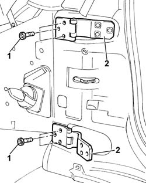

7005A24 FRONT SIDE DOOR R R
- Path
- Procedures > 70 FITTINGS > 7005 PASSENGER COMPARTMENT FRONT SIDE DOORS > 7005A LOCATION OF FRONT DOOR WIND NOISES > 7005A24 FRONT SIDE DOOR R R
- Kind
- repair procedure (removal / refitting; the operation number is the code)
- Applies to
- all engines; all production periods
- Interactive page
- https://sloeber94.github.io/elrnDB-fDct/en/#/244001420
Applies to: all engines; all production periods
 Removing
Removing
 Refitting
Refitting- Disconnect the negative battery terminal.
Op. 4450B12 FRONT OR REAR WHEELS (TWO) - R+R
Op. 7055B64 LH OR RH REFLECTOR(ONE) ON REAR BUMPERS - R R
- (both sides)
Op. 7055B54 UNDER-ENGINE GUARD - R R
1. Undo the bolts fixing the hinges.
2. Remove the hinges.

Applies to: all engines; all production periods
Refitting
Removing- Position the hinges and fasten them to the bodyshell tightening the fixing bolts to the recommended torque.
 | Value - daNm | Fastening | Component | Ø |
|---|---|---|---|---|
. | 4,4 | Bolt | FRONT SIDE DOOR HINGES | M10 |
Op. 7055B54 UNDER-ENGINE GUARD - R R
Op. 7055B64 LH OR RH REFLECTOR(ONE) ON REAR BUMPERS - R R
-
Op. 4450B12 FRONT OR REAR WHEELS (TWO) - R+R
- [both sides]